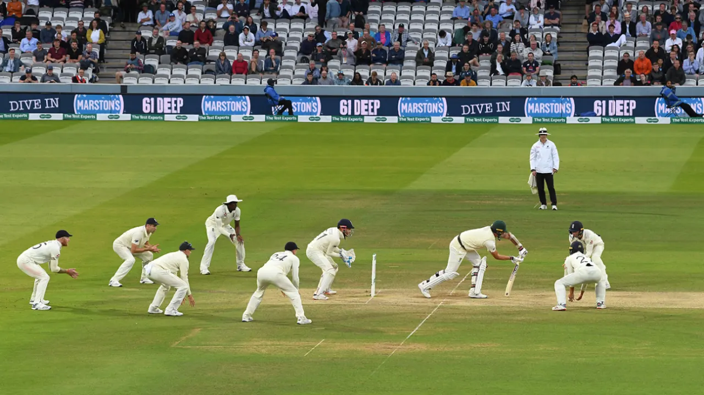

My name is Keshav Balaji, and this is my cricket website!

Cricket is a popular team sport enjoyed by billions around the world.
The sport is a bat-and-ball game played between two teams, each consisting of 11 players, on an oval-shaped field.
The batting team aims to score runs by hitting the ball and running between two sets of wickets, while the bowling
and fielding team aims to dismiss the batsmen and limit the number of runs scored. Cricket matches can last for several
hours or days, depending on the format being played (such as Test matches, ODI’s, or T20’s).
Common Cricket Terms:
Wicket
Dismissal of a batsman
Stumps
The set of 3 wooden sticks at either end of the pitch, which, if hit, indicates a dismissal
LBW
Leg-before wicket, is a type of dismissal when the ball hits the batsman's body in line with the stumps
Wide
A type of delivery that is bowled out of reach of the batsman, and does not count as a ball
No-ball
When a bowler's foot crosses the crease when bowling, or when a ball is bowled above the batsman's waist without bouncing.